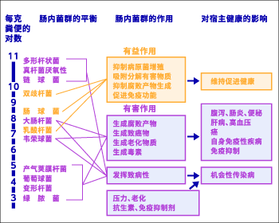

Contents could not be displayed properly. Enable the JavaScript setting in your browser.
从1964年到66年，遂了自己多年的心愿——前往西柏林自由大学食品卫生学研究室留学。在这两年中，我和欧美各国的一流研究人员相遇交流，在最先进的现场埋头进行研究。
回国后又马上研发了多菌株接种装置。并在细菌分类学领域采用分子生物学方法，对以往的分类重新梳理，花了很大精力对新分离菌株进行了研究，结果发现并命名记载了属于双叉乳杆菌、乳酸杆菌、拟杆菌属、梭菌的29个新菌种。
柏林自由大学留学时代
最近，我在考虑今后如何促进对肠道菌群展开研究，并提倡研究“肠道菌群与宿主之间的关系（假说）”。 此外，还出版了以往处于混乱状态的肠道菌群色谱《肠道菌的世界-厌氧菌的分类与鉴别》，在国际上受到极高的评价。
《腸内菌の世界-嫌気性菌の分類と同定》 叢文社（1980年）

1970年，我开始担任主任研究员，从这一时期来自各大学和企业研究所的年轻研究人员开始聚集到我的身边，我的研究室开始被称为“光冈学校”。他们都携带各自的主题，都是为了学习肠道菌群的培养和检索方法慕名而来。
不久，随着人类肠道菌群相关的检索法以及从分类到生态的基础理论得以确立，开始与许多临床医学专家开展共同研究。从斯蒙病、溃疡性大肠炎、大肠癌、乳腺癌、到阿尔茨海默病、糖尿病……搜索各自的肠道菌群进行分析。
其中，1976年，通过投放杀菌酸乳发现小鼠的肠道双叉乳杆菌繁殖效果，与人类摄取酸奶等情况下的评估直接相关，这一发现成了对特定保健用食品“肠胃调理”功能的评估条件。
在理研的时期
我从开始研究肠道菌群已经超过半个世纪了。从肠道菌群的检索法和多菌株接种、鉴别术开发，到肠道菌群的生态学规律、肠道细菌功能的发现，再到功能性食品的开发，一直埋头于自己喜爱的研究。这些研究肯定会成为今后越来越重要的课题。并且会与各种其他领域不断地展开合作。面对其无限扩大的可能性，今后我还有许多必须解决的课题要做。希望大家也要关注这一领域的研究。
1981年 访问保加利亚长寿村101岁的长寿老人